on
Inverse transform sampling
Probability density and cumulative distribution functions
Probability denisity function $f(x)$ is a function, which allows us to evaluate the probability that the sample, drawn from the distribution, will be equal to the value $X$. Also we can use PDF to calculate the probability that the randomly drawn sample from distribution will be in certain range, for example, $a \leq X \leq b$. This probability equals to the area under the PDF curve on the given interval and can be calculated by integration: $$ P(a \leq X \leq b) = \int _a^b f(x) dx $$
Cumulative distribution function shows us the probability (portion of data, frequence) to draw a number $X$ less or equal than $x$: $$ P(X \leq x) = F(x). $$
It is obvious, that the probability that value lies in semi-closed interval $[a, b)$ can be represented as: $$ P(a \leq X \leq b) = F(b) - F(a) $$
Let’s experiment with normal distribution, its PDF has the following form:
x, pi, sigma, mu = sp.symbols('x, pi, sigma, mu', positive = True)
pdf = ((2.0 * sp.pi) ** sp.Rational(-1, 2) / sigma) * sp.exp(-0.5 * ((x - mu)/sigma) ** 2)
display(pdf)
$\displaystyle \frac{0.707106781186548 e^{- \frac{0.5 \left(- \mu + x\right)^{2}}{\sigma^{2}}}}{\sqrt{\pi} \sigma}$
Its CDF can be found by integration:
cdf = sp.simplify(sp.integrate(pdf, x)) + 0.5
display(cdf)
$\displaystyle 0.5 - 0.5 \operatorname{erf}{\left(\frac{0.707106781186548 \left(\mu - x\right)}{\sigma} \right)}$
To get 3-sigma 68-95-99.7 rule, which tells us that 68%-95%-99.7% of data lies within one-two-three standard deviation of the mean, we can just integrate the pdf on the following intervals: $[\mu - n\sigma, \mu + n\sigma]$, where $n = {1, 2, 3}$:
Data portion within $\mu \pm \sigma$ interval:
display(float(sp.integrate(pdf, (x, mu-sigma, mu+sigma))))
$\displaystyle 0.682689492137086$
Data portion within $\mu \pm 2\sigma$ interval:
display(cdf.subs({x: mu + 2 * sigma}) - cdf.subs({x: mu - 2 * sigma}))
$\displaystyle 0.954499736103642$
Data portion within $\mu \pm 3\sigma$ interval:
display(cdf.subs({x: mu + 3 * sigma}) - cdf.subs({x: mu - 3 * sigma}))
$\displaystyle 0.99730020393674$
And now let’s visualize it as the area under gaussian PDF within given ranges:
gaussian_pdf = sp.lambdify((x, mu, sigma), pdf)
gaussian_cdf = sp.lambdify((x, mu, sigma), cdf)
Mu, Sigma = 4.0, 1.0
fig, ax = plt.subplots(1, 1, figsize=(8, 4))
spanFrom, spanTo = Mu - 4 * Sigma, Mu + 4 * Sigma
span = np.linspace(spanFrom, spanTo, 100)
ax.plot(span, gaussian_pdf(span, Mu, Sigma), label='pdf')
ax.set(xlabel='$x$', ylabel='$p = f(x)$', title='$X \sim \mathcal{N} (' + str(Mu) + ", " + str(Sigma**2) + ")$")
for i in range(-3, 3):
spanStart, spanEnd = Mu + i * Sigma, Mu + (i + 1) * Sigma
span = np.linspace(spanStart, spanEnd, 100)
ax.fill_between(span, gaussian_pdf(span, Mu, Sigma), interpolate=True, alpha=0.5)
ax.annotate(str(np.round_(100 * (gaussian_cdf(spanEnd, Mu, Sigma) - gaussian_cdf(spanStart, Mu, Sigma)), 1)) + '%',
xy=((spanStart + spanEnd) * 0.5, 0.025), ha='center')
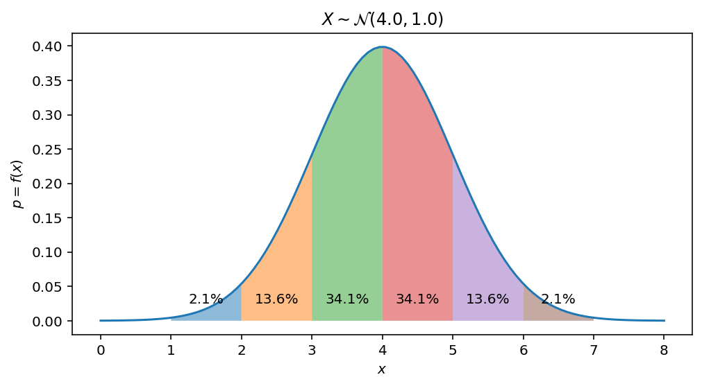
Let’s find Gaussian distribution mean, or first moment, which, by definition equals to $\int_{-\infty}^\infty x f(x) dx$:
mean = sp.integrate(pdf * x, (x, -sp.oo, sp.oo))
display(mean)
$\displaystyle 1.0 \mu$
The variance can be found using second moment and mean, $Var(X) = \mathbb E[X^2] - \mathbb E [X]^2$
variance = sp.integrate(pdf * x * x, (x, -sp.oo, sp.oo)) - mean**2
display(variance)
$\displaystyle 1.0 \sigma^{2}$
And verify that the area under the curve, or total probability should be equal to 1.0:
area = sp.integrate(pdf, (x, -sp.oo, sp.oo))
display(area)
$\displaystyle 1.0$
Inverse CDF
The inverse of CDF is called quantile function. If $F(x) = P(X \leq x) = p$ tells us the probability to draw a number less or equal than the value $x$ from distribution then $F^{-1}(p)$ tells us vise versa: what is the value of $x$, such that $F(X\leq x) = p$. For example, $F^{-1}(0.5)$ is the median of the distribution, $F^{-1}(0.25)$ is the lower quartile. In other words, it answer on the following question: what is the proportion of data, which is less or equal to the given value $x$.
Inverse CDF for gaussian distribution has the following form:
p = sp.symbols('p')
inverse_cdf = sp.solve(cdf - p, x)[0]
display(inverse_cdf)
$\displaystyle \mu - 1.41421356237309 \sigma \operatorname{erfinv}{\left(1.0 - 2.0 p \right)}$
Now wish we would like to answer on the following questions: what is the value $x$ for which the half of the data is less than it?
display(inverse_cdf.subs({p:0.5}))
$\displaystyle \mu$
This makes sense: we know, that for gaussian its mean is equal to $mu$ and the half of the data should be less than this value.
The following plot helps to understand an idea: * CDF maps $x$ value to the portion of data, which is less or equal than $x$ * Inverse of CDF gives an answer on the following question: for given $p$ what is the value $x$, for which $P(X \leq x) = p$ satisfies?
Mu, Sigma = 4.0, 1.0
spanFrom, spanTo = Mu - 4 * Sigma, Mu + 4 * Sigma
span = np.linspace(spanFrom, spanTo, 100)
fig, ax = plt.subplots(1, 1, figsize=(8, 4))
ax.plot(span, gaussian_cdf(span, Mu, Sigma), label='cdf')
ax.set(xlabel='$x = F^{-1}(p)$', ylabel='$p = F(x)$', title='Cumulative distribution function')
cdf_value = float(sp.integrate(pdf, (x, -sp.oo, mu)))
X, Y = [Mu, Mu, spanFrom], [0.0, cdf_value, cdf_value]
ax.quiver(X[:-1], Y[:-1], np.diff(X), np.diff(Y), angles='xy', scale_units='xy', scale=1, width=0.005, color='C1', label='CDF')
cdf_value = float(sp.integrate(pdf, (x, -sp.oo, mu-sigma)))
X, Y = [spanFrom, Mu - Sigma, Mu-Sigma], [cdf_value, cdf_value, 0.0]
ax.quiver(X[:-1], Y[:-1], np.diff(X), np.diff(Y), angles='xy', scale_units='xy', scale=1, width=0.005, color='C7', label='inverse CDF')
ax.xaxis.set_major_locator(plticker.MultipleLocator(base=1.0))
ax.yaxis.set_major_locator(plticker.MultipleLocator(base=0.1))
ax.legend(loc='lower right')
ax.set_xlim(spanFrom, spanTo)
ax.set_ylim(0.0, 1.0)
$\displaystyle \left( 0.0, \ 1.0\right)$
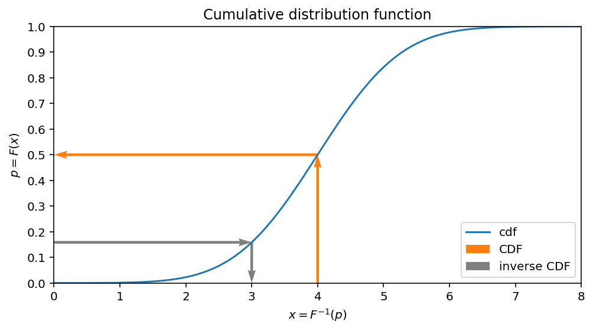
Inverse transform sampling
Now, having this function, which maps $p$ to $x$ it should be obvious how to sample from our desired distribution having the samples from the uniform one.
Let’s illustrate the idea with the set of uniformly distributed points along $p$ and map all of them to $x$ using inverse CDF. It’s clearly seen then after applying this transformation the points are not evenly spaced anymore.
gaussian_inverse_cdf = sp.lambdify((p, mu, sigma), inverse_cdf)
Mu, Sigma = 3.0, 2.0
spanFrom, spanTo = Mu - 4 * Sigma, Mu + 4 * Sigma
span = np.linspace(spanFrom, spanTo, 100)
fig, ax = plt.subplots(1, 1, figsize=(8, 4))
ax.plot(span, gaussian_cdf(span, Mu, Sigma), label='cdf')
ax.set(xlabel='$x = F^{-1}(p)$, sample space', ylabel='$p = F(x)$, uniform values')
uniform_samples = np.linspace(0.01, 0.99, 21)
for sample in uniform_samples:
cdfValue = gaussian_inverse_cdf(sample, Mu, Sigma)
X, Y = [spanFrom, cdfValue, cdfValue], [sample, sample, 0.0]
ax.quiver(X[:-1], Y[:-1], np.diff(X), np.diff(Y), angles='xy', scale_units='xy', scale=1, width=0.001, color='C7', label='inverse CDF',
headlength=30.0, headwidth=20.0)
ax.scatter(gaussian_inverse_cdf(uniform_samples, Mu, Sigma), [0] * len(uniform_samples), alpha=0.3, c = 'C2')
ax.scatter([Mu - 3 * Sigma] * len(uniform_samples), uniform_samples, alpha=0.3, c = 'C1')
ax.set_xlim(Mu - 3 * Sigma, Mu + 3 * Sigma)
ax.set_ylim(0.0, 1.0)
ax.xaxis.set_major_locator(plticker.MultipleLocator(base=1.0))
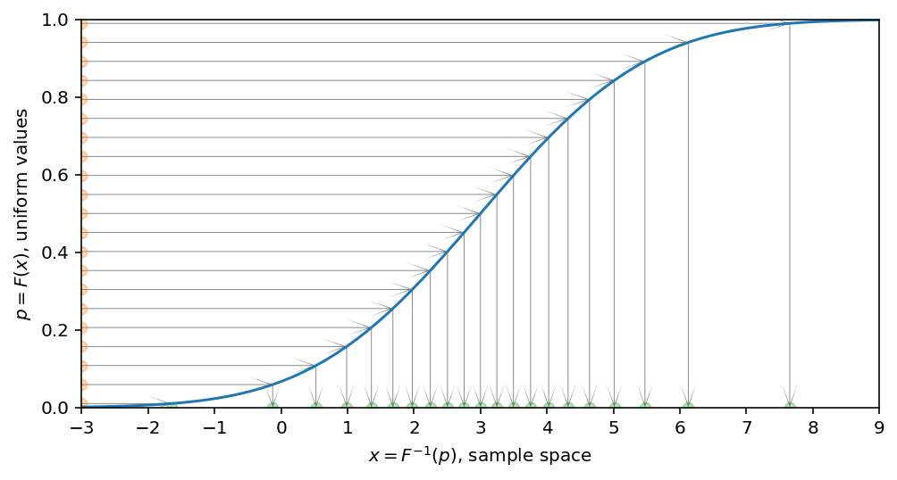
Now, thanks to CDF, we have one-to-one correspondance between uniformly sampled numbers $p$ (because for uniform distribution every sample is equally probable) and $x$, which maps $p$ to the value $x$ from our desired distribution. To have this one-to-one correspondance, CDF should be monotonically increasing.
To experimentally verify that everythink works as expected we can randomly draw uniformly distributed numbers and map them to our desired distribution.
Inverse transform sampling for Normal distribution
As a first experiment, we will proceed with inverse of Gaussian CDF. To do so we sample from Uniform distribution and transform them to the Gaussian one.
import seaborn as sns
Mu, Sigma = 5, 1
uniform_samples = np.random.uniform(size=5000)
gaussian_samples = gaussian_inverse_cdf(uniform_samples, Mu, Sigma)
ax = sns.jointplot(np.array(gaussian_samples).astype(float), uniform_samples, marginal_kws=dict(bins=30, rug=True),
joint_kws=dict(alpha=0.5, linewidth=None, marker='x'))
spanFrom, spanTo = Mu - 4 * Sigma, Mu + 4 * Sigma
span = np.linspace(spanFrom, spanTo, 100)
ax.ax_joint.plot(span, gaussian_cdf(span, Mu, Sigma), color='red', label='CDF')
ax.fig.set_figwidth(6)
ax.fig.set_figheight(4)
ax.set_axis_labels('Mapped to Gaussian using inverse CDF', 'Uniformly sampled points', fontsize=10)
<seaborn.axisgrid.JointGrid at 0x7f2462c25b10>
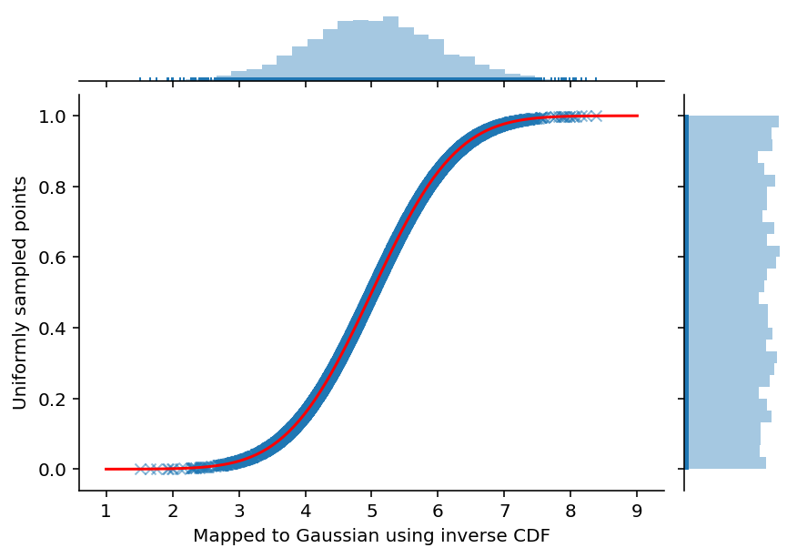
fig, ax = plt.subplots(1, 1, figsize=(6, 3))
ax.hist(gaussian_samples, bins=31, density=True, label='Sampled using inverse transform')
spanFrom, spanTo = Mu - 4 * Sigma, Mu + 4 * Sigma
span = np.linspace(spanFrom, spanTo, 100)
ax.plot(span, gaussian_pdf(span, Mu, Sigma), color='red', label='Analytical CDF')
ax.set(xlabel='$x$', ylabel='$p = f(x)$', title='$X \sim \mathcal{N} (' + str(Mu) + ", " + str(Sigma**2) + ")$")
ax.legend(loc='upper left')
<matplotlib.legend.Legend at 0x7f24509bdf90>
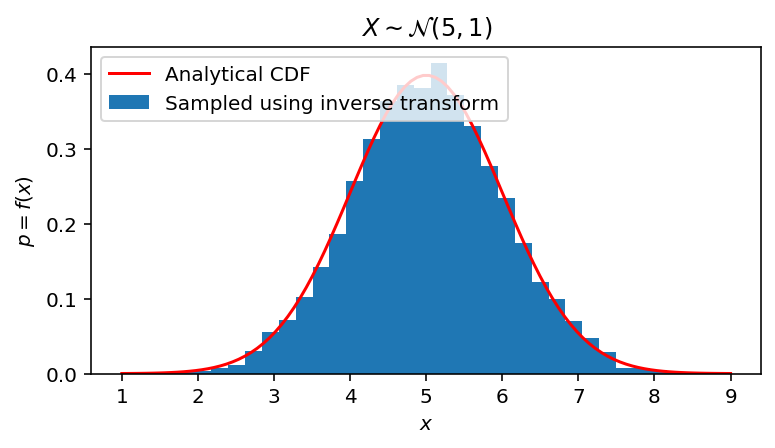
Inverse transform sampling for Exponential distribution
First, define exponential distribution PDF.
x, lambd, p = sp.symbols('x, lambda, p', positive = True)
pdf_exponential = lambd * sp.exp(-lambd * x)
display(pdf_exponential)
$\displaystyle \lambda e^{- \lambda x}$
Second, integrate PDF to obtain CDF.
cdf_exponential = 1.0 + sp.integrate(pdf_exponential, x)
display(cdf_exponential)
$\displaystyle 1.0 - e^{- \lambda x}$
Third, invert it.
inverse_cdf_exponential = sp.solve(cdf_exponential - p, x)
display(inverse_cdf_exponential)
$\displaystyle \left[ \frac{\log{\left(- \frac{1}{p - 1.0} \right)}}{\lambda}\right]$
Now we are ready to transform samples from uniform space to the exponential one.
Lambda = 1.25
exponential_pdf = sp.lambdify((x, lambd), pdf_exponential)
exponential_cdf = sp.lambdify((x, lambd), cdf_exponential)
exponential_inverse_cdf = sp.lambdify((p, lambd), inverse_cdf_exponential)
uniform_samples = np.random.uniform(size=5000)
exponential_samples = exponential_inverse_cdf(uniform_samples, Lambda)[0]
ax = sns.jointplot(exponential_samples, uniform_samples, marginal_kws=dict(bins=30, rug=True),
joint_kws=dict(alpha=0.5, linewidth=None, marker='x'))
spanFrom, spanTo = 0.0, exponential_inverse_cdf(0.9999, Lambda)
span = np.linspace(spanFrom, spanTo, 100)
ax.ax_joint.plot(span, exponential_cdf(span, Lambda), color='red', label='CDF')
ax.fig.set_figwidth(6)
ax.fig.set_figheight(4)
ax.set_axis_labels('Mapped to Exponential using inverse CDF', 'Uniformly sampled points', fontsize=10)
<seaborn.axisgrid.JointGrid at 0x7f246350dd50>
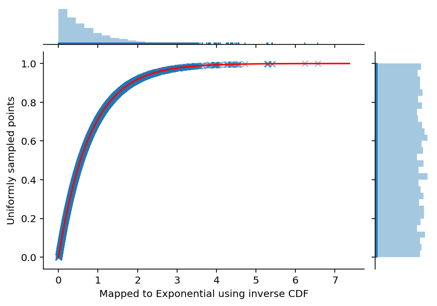
fig, ax = plt.subplots(1, 1, figsize=(6, 3))
ax.hist(exponential_samples, bins=31, density=True, label='Sampled using inverse transform')
spanFrom, spanTo = 0.0, exponential_inverse_cdf(0.9999, Lambda)
span = np.linspace(spanFrom, spanTo, 100)
ax.plot(span, exponential_pdf(span, Lambda), color='red', label='Analytical CDF')
ax.set(xlabel='$x$', ylabel='$p = f(x)$',
title='$X \sim Exp(' + str(Lambda) + ")$")
ax.legend(loc='upper right')
<matplotlib.legend.Legend at 0x7f24507760d0>
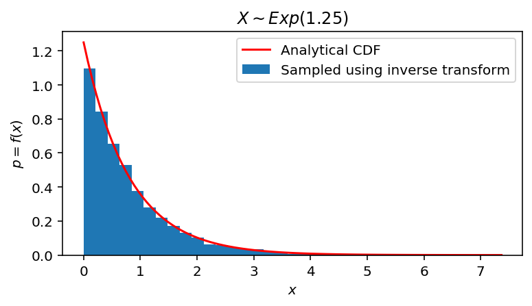
Sampling from experimental distribution
Now assume that we have experimentally gathered data and we can visualize it using histogram. How we can sample from it? One of the easiest approaches can be the following: * Approximate the histogram with a polynom. * Find polynom inverse. * Sample using inverse transform.
However, finding polynom inverse analytically is not easy task. So, instead of finding it analytiall we can just solve for the root numerically each time.
For example, let’s simulate experimental data:
data = np.hstack([np.random.normal(6.0, 1.0, 10000), np.random.gumbel(1.5, 0.5, 10000)])
fig, ax = plt.subplots(1, 1, figsize=(6, 3))
ax.hist(data, bins=100, density=True);
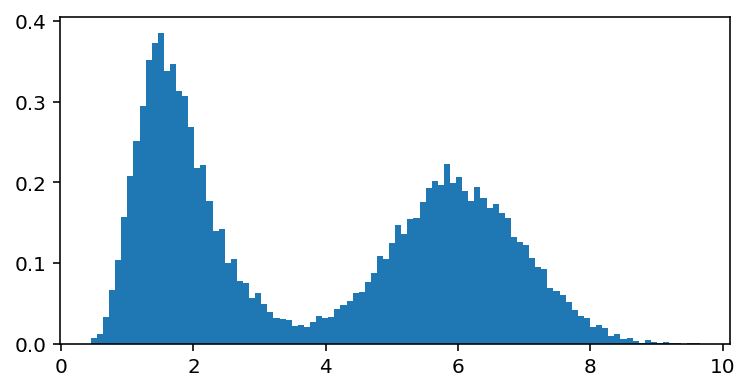
Fit polynom to the histogram CDF and define inverse CDF as a function which finds the root:
from scipy import interpolate
import scipy.optimize as scop
heights, bins = np.histogram(data, bins=100, density=True)
histogram_cdf = np.hstack([0, np.cumsum(heights * np.diff(bins))])
experimental_cdf = interpolate.interp1d(bins, histogram_cdf, fill_value="extrapolate")
experimental_inverse_cdf = lambda p: scop.fsolve(lambda x : experimental_cdf(x) - p, 0.0)[0]
uniform_samples = np.random.uniform(size=5000)
experimental_samples = [experimental_inverse_cdf(u) for u in uniform_samples];
ax = sns.jointplot(experimental_samples, uniform_samples, marginal_kws=dict(bins=30, rug=True),
joint_kws=dict(alpha=0.5, linewidth=None, marker='x'))
spanFrom, spanTo = 0.0, experimental_inverse_cdf(0.9999)
span = np.linspace(spanFrom, spanTo, 100)
ax.ax_joint.plot(span, experimental_cdf(span), color='red', label='CDF')
ax.fig.set_figwidth(6)
ax.fig.set_figheight(4)
ax.set_axis_labels('Mapped to Experimental distribution using inverse CDF', 'Uniformly sampled points', fontsize=10)
<seaborn.axisgrid.JointGrid at 0x7f24508bb950>
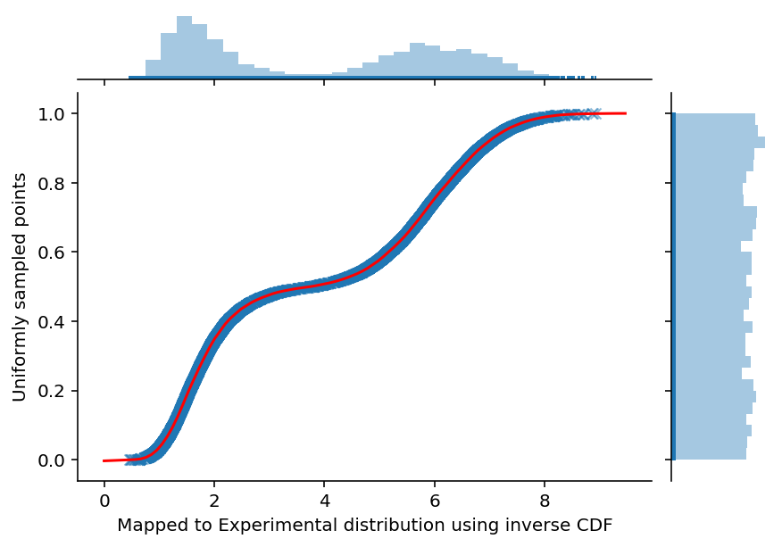
fig, ax = plt.subplots(1, 1, figsize=(6, 3))
ax.hist(data, bins=31, density=True, label='True data', alpha=0.5)
ax.hist(experimental_samples, bins=31, density=True, label='Sampled using inverse transform', alpha=0.5)
ax.set(xlabel='$x$', ylabel='$p = f(x)$', title='Experimental data vs Sampled from experimental distribution')
ax.legend(loc='upper right')
<matplotlib.legend.Legend at 0x7f244fb17a10>
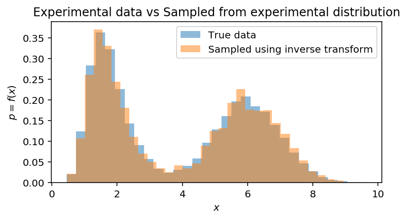
It works, however, its not efficient, because to find inverse CDF we have to numerically solve equation $F(x) - p = 0$. To overcome this computational overhead it is much better to just swap $x$ and $y$ on interpolation step. By doing so we directly obtain required inverse CDF for newly generated dataset:
data = np.hstack([np.random.normal(4.0, 2.0, 10000),
np.random.gumbel(0.5, 0.5, 10000),
np.random.gumbel(7.5, 1.0, 10000),
np.random.normal(13.5, 1.0, 10000)])
heights, bins = np.histogram(data, bins=100, density=True)
histogram_cdf = np.hstack([0, np.cumsum(heights * np.diff(bins))])
experimental_cdf = interpolate.interp1d(bins, histogram_cdf, fill_value="extrapolate")
experimental_inverse_cdf = interpolate.interp1d(histogram_cdf, bins, fill_value="extrapolate")
And we can use this function directly:
uniform_samples = np.random.uniform(size=5000)
experimental_samples = [experimental_inverse_cdf(u) for u in uniform_samples]
ax = sns.jointplot(experimental_samples, uniform_samples, marginal_kws=dict(bins=30, rug=True),
joint_kws=dict(alpha=0.5, linewidth=None, marker='x'))
spanFrom, spanTo = 0.0, experimental_inverse_cdf(0.9999)
span = np.linspace(spanFrom, spanTo, 100)
ax.ax_joint.plot(span, experimental_cdf(span), color='red', label='CDF')
ax.fig.set_figwidth(6)
ax.fig.set_figheight(4)
ax.set_axis_labels('Mapped to Experimental distribution using inverse CDF', 'Uniformly sampled points', fontsize=10)
<seaborn.axisgrid.JointGrid at 0x7f244fa194d0>
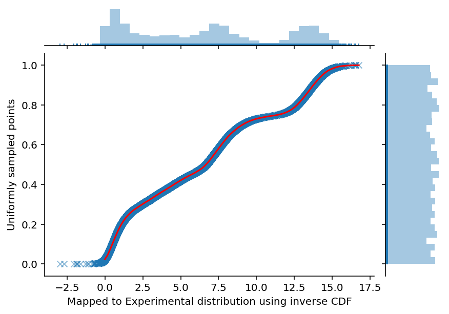
Compare with experimental distribution:
fig, ax = plt.subplots(1, 1, figsize=(6, 3))
ax.hist(data, bins=31, density=True, label='True data', alpha=0.5)
ax.hist(experimental_samples, bins=31, density=True, label='Sampled using inverse transform', alpha=0.5)
ax.set(xlabel='$x$', ylabel='$p = f(x)$', title='Experimental data vs Sampled from experimental distribution')
ax.legend(loc='upper right')
<matplotlib.legend.Legend at 0x7f244f3d53d0>
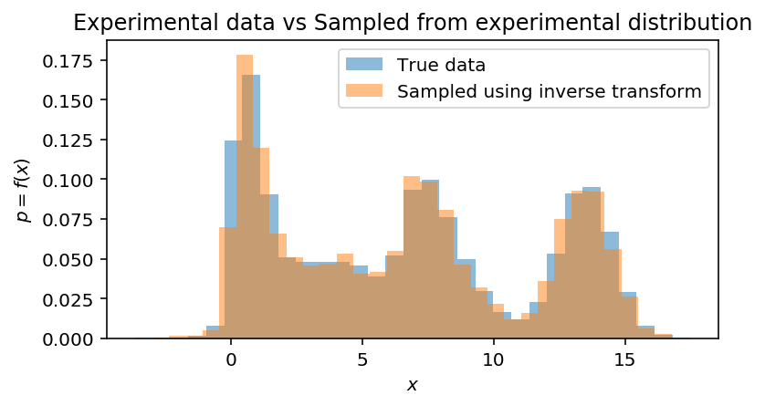
Conclusions
After all, it should become clear what inverse transform sampling actually does and how to sample from any distribution, which inverse CDF can be derived. In the next posts I am planning to show some examples on rejection, Metropolis Hastings and Gibbs sampling. These methods are usually used when direct sampling from probability distribution is difficult.